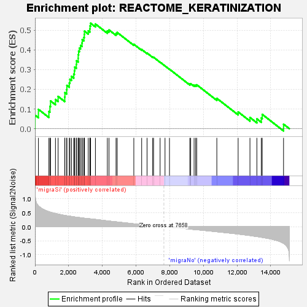
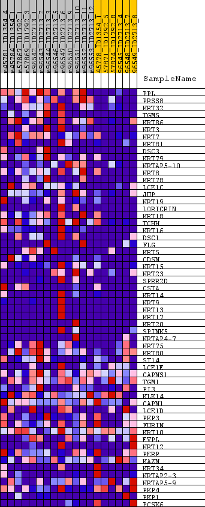
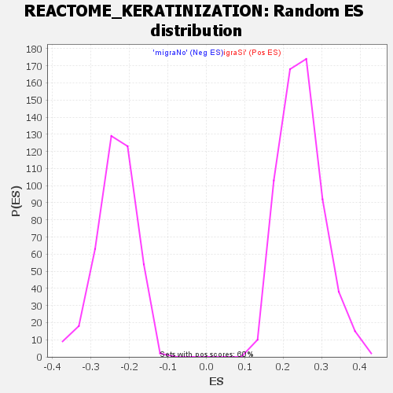

| Dataset | normalized_counts_collapsed_to_symbols.phenotype_labels.cls #migraSi_versus_migraNo.phenotype_labels.cls #migraSi_versus_migraNo_repos |
| Phenotype | phenotype_labels.cls#migraSi_versus_migraNo_repos |
| Upregulated in class | migraSi |
| GeneSet | REACTOME_KERATINIZATION |
| Enrichment Score (ES) | 0.5354364 |
| Normalized Enrichment Score (NES) | 2.1710699 |
| Nominal p-value | 0.0 |
| FDR q-value | 0.0014865152 |
| FWER p-Value | 0.031 |

| SYMBOL | TITLE | RANK IN GENE LIST | RANK METRIC SCORE | RUNNING ES | CORE ENRICHMENT | |
|---|---|---|---|---|---|---|
| 1 | PPL | periplakin [Source:HGNC Symbol;Acc:HGNC:9273] | 3 | 1.194 | 0.0686 | Yes |
| 2 | PRSS8 | serine protease 8 [Source:HGNC Symbol;Acc:HGNC:9491] | 204 | 0.743 | 0.0981 | Yes |
| 3 | KRT32 | keratin 32 [Source:HGNC Symbol;Acc:HGNC:6449] | 825 | 0.533 | 0.0877 | Yes |
| 4 | TGM5 | transglutaminase 5 [Source:HGNC Symbol;Acc:HGNC:11781] | 887 | 0.520 | 0.1136 | Yes |
| 5 | KRT86 | keratin 86 [Source:HGNC Symbol;Acc:HGNC:6463] | 923 | 0.512 | 0.1408 | Yes |
| 6 | KRT3 | keratin 3 [Source:HGNC Symbol;Acc:HGNC:6440] | 1216 | 0.467 | 0.1483 | Yes |
| 7 | KRT7 | keratin 7 [Source:HGNC Symbol;Acc:HGNC:6445] | 1373 | 0.448 | 0.1637 | Yes |
| 8 | KRT81 | keratin 81 [Source:HGNC Symbol;Acc:HGNC:6458] | 1767 | 0.398 | 0.1606 | Yes |
| 9 | DSC3 | desmocollin 3 [Source:HGNC Symbol;Acc:HGNC:3037] | 1777 | 0.397 | 0.1829 | Yes |
| 10 | KRT79 | keratin 79 [Source:HGNC Symbol;Acc:HGNC:28930] | 1883 | 0.387 | 0.1982 | Yes |
| 11 | KRTAP5-10 | keratin associated protein 5-10 [Source:HGNC Symbol;Acc:HGNC:23605] | 1894 | 0.386 | 0.2198 | Yes |
| 12 | KRT8 | keratin 8 [Source:HGNC Symbol;Acc:HGNC:6446] | 2037 | 0.375 | 0.2319 | Yes |
| 13 | KRT78 | keratin 78 [Source:HGNC Symbol;Acc:HGNC:28926] | 2073 | 0.371 | 0.2510 | Yes |
| 14 | LCE1C | late cornified envelope 1C [Source:HGNC Symbol;Acc:HGNC:29464] | 2167 | 0.362 | 0.2657 | Yes |
| 15 | JUP | junction plakoglobin [Source:HGNC Symbol;Acc:HGNC:6207] | 2302 | 0.349 | 0.2769 | Yes |
| 16 | KRT19 | keratin 19 [Source:HGNC Symbol;Acc:HGNC:6436] | 2340 | 0.346 | 0.2943 | Yes |
| 17 | LORICRIN | loricrin cornified envelope precursor protein [Source:HGNC Symbol;Acc:HGNC:6663] | 2359 | 0.344 | 0.3129 | Yes |
| 18 | KRT18 | keratin 18 [Source:HGNC Symbol;Acc:HGNC:6430] | 2453 | 0.337 | 0.3262 | Yes |
| 19 | TCHH | trichohyalin [Source:HGNC Symbol;Acc:HGNC:11791] | 2466 | 0.336 | 0.3447 | Yes |
| 20 | KRT16 | keratin 16 [Source:HGNC Symbol;Acc:HGNC:6423] | 2565 | 0.329 | 0.3571 | Yes |
| 21 | DSC1 | desmocollin 1 [Source:HGNC Symbol;Acc:HGNC:3035] | 2567 | 0.328 | 0.3760 | Yes |
| 22 | FLG | filaggrin [Source:HGNC Symbol;Acc:HGNC:3748] | 2591 | 0.327 | 0.3933 | Yes |
| 23 | KRT5 | keratin 5 [Source:HGNC Symbol;Acc:HGNC:6442] | 2637 | 0.323 | 0.4089 | Yes |
| 24 | CDSN | corneodesmosin [Source:HGNC Symbol;Acc:HGNC:1802] | 2707 | 0.317 | 0.4226 | Yes |
| 25 | KRT15 | keratin 15 [Source:HGNC Symbol;Acc:HGNC:6421] | 2792 | 0.311 | 0.4350 | Yes |
| 26 | KRT23 | keratin 23 [Source:HGNC Symbol;Acc:HGNC:6438] | 2805 | 0.309 | 0.4520 | Yes |
| 27 | SPRR2D | small proline rich protein 2D [Source:HGNC Symbol;Acc:HGNC:11264] | 2903 | 0.301 | 0.4629 | Yes |
| 28 | CSTA | cystatin A [Source:HGNC Symbol;Acc:HGNC:2481] | 2930 | 0.299 | 0.4784 | Yes |
| 29 | KRT14 | keratin 14 [Source:HGNC Symbol;Acc:HGNC:6416] | 2937 | 0.298 | 0.4952 | Yes |
| 30 | KRT9 | keratin 9 [Source:HGNC Symbol;Acc:HGNC:6447] | 3163 | 0.283 | 0.4966 | Yes |
| 31 | KRT13 | keratin 13 [Source:HGNC Symbol;Acc:HGNC:6415] | 3258 | 0.278 | 0.5064 | Yes |
| 32 | KRT17 | keratin 17 [Source:HGNC Symbol;Acc:HGNC:6427] | 3269 | 0.278 | 0.5217 | Yes |
| 33 | KRT20 | keratin 20 [Source:HGNC Symbol;Acc:HGNC:20412] | 3303 | 0.276 | 0.5354 | Yes |
| 34 | SPINK5 | serine peptidase inhibitor Kazal type 5 [Source:HGNC Symbol;Acc:HGNC:15464] | 3589 | 0.258 | 0.5314 | No |
| 35 | KRTAP4-7 | keratin associated protein 4-7 [Source:HGNC Symbol;Acc:HGNC:18898] | 4297 | 0.205 | 0.4962 | No |
| 36 | KRT75 | keratin 75 [Source:HGNC Symbol;Acc:HGNC:24431] | 4396 | 0.199 | 0.5012 | No |
| 37 | KRT80 | keratin 80 [Source:HGNC Symbol;Acc:HGNC:27056] | 4813 | 0.171 | 0.4834 | No |
| 38 | ST14 | ST14 transmembrane serine protease matriptase [Source:HGNC Symbol;Acc:HGNC:11344] | 4881 | 0.167 | 0.4885 | No |
| 39 | LCE1E | late cornified envelope 1E [Source:HGNC Symbol;Acc:HGNC:29466] | 5870 | 0.100 | 0.4286 | No |
| 40 | CAPNS1 | calpain small subunit 1 [Source:HGNC Symbol;Acc:HGNC:1481] | 6336 | 0.074 | 0.4020 | No |
| 41 | TGM1 | transglutaminase 1 [Source:HGNC Symbol;Acc:HGNC:11777] | 6656 | 0.056 | 0.3840 | No |
| 42 | PI3 | peptidase inhibitor 3 [Source:HGNC Symbol;Acc:HGNC:8947] | 6991 | 0.037 | 0.3639 | No |
| 43 | KLK14 | kallikrein related peptidase 14 [Source:HGNC Symbol;Acc:HGNC:6362] | 7042 | 0.034 | 0.3626 | No |
| 44 | CAPN1 | calpain 1 [Source:HGNC Symbol;Acc:HGNC:1476] | 7431 | 0.014 | 0.3376 | No |
| 45 | LCE1D | late cornified envelope 1D [Source:HGNC Symbol;Acc:HGNC:29465] | 7723 | -0.003 | 0.3185 | No |
| 46 | PKP3 | plakophilin 3 [Source:HGNC Symbol;Acc:HGNC:9025] | 7988 | -0.017 | 0.3019 | No |
| 47 | FURIN | furin, paired basic amino acid cleaving enzyme [Source:HGNC Symbol;Acc:HGNC:8568] | 9193 | -0.086 | 0.2269 | No |
| 48 | KRT10 | keratin 10 [Source:HGNC Symbol;Acc:HGNC:6413] | 9247 | -0.090 | 0.2285 | No |
| 49 | EVPL | envoplakin [Source:HGNC Symbol;Acc:HGNC:3503] | 9450 | -0.100 | 0.2209 | No |
| 50 | KRT12 | keratin 12 [Source:HGNC Symbol;Acc:HGNC:6414] | 9541 | -0.105 | 0.2210 | No |
| 51 | PERP | p53 apoptosis effector related to PMP22 [Source:HGNC Symbol;Acc:HGNC:17637] | 9607 | -0.109 | 0.2229 | No |
| 52 | KAZN | kazrin, periplakin interacting protein [Source:HGNC Symbol;Acc:HGNC:29173] | 10800 | -0.181 | 0.1541 | No |
| 53 | KRT34 | keratin 34 [Source:HGNC Symbol;Acc:HGNC:6452] | 12066 | -0.264 | 0.0853 | No |
| 54 | KRTAP2-3 | keratin associated protein 2-3 [Source:HGNC Symbol;Acc:HGNC:18906] | 12768 | -0.316 | 0.0569 | No |
| 55 | KRTAP5-9 | keratin associated protein 5-9 [Source:HGNC Symbol;Acc:HGNC:23604] | 13179 | -0.351 | 0.0499 | No |
| 56 | PKP4 | plakophilin 4 [Source:HGNC Symbol;Acc:HGNC:9026] | 13441 | -0.378 | 0.0543 | No |
| 57 | PKP1 | plakophilin 1 [Source:HGNC Symbol;Acc:HGNC:9023] | 13498 | -0.383 | 0.0727 | No |
| 58 | PCSK6 | proprotein convertase subtilisin/kexin type 6 [Source:HGNC Symbol;Acc:HGNC:8569] | 14763 | -0.595 | 0.0230 | No |

